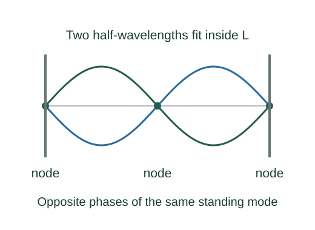

Derive the allowed frequencies of a fixed string
Waves reflected from the ends can form a standing pattern. Fixed ends require nodes at both boundaries, allowing only whole numbers of half-wavelengths inside the string length.
What the symbols mean
L: vibrating string length; v: wave propagation speed; n: positive integer mode number; fn: frequency of mode n.
When this applies
Uniform string, fixed endpoints, linear waves, and negligible damping for the ideal mode frequencies.

Superpose counterpropagating waves
Two equal waves travelling in opposite directions combine into a product of a spatial factor and a time factor. Points where the spatial factor is zero remain at rest.
Impose the first boundary
Choosing sin(kx) makes x = 0 a node automatically. A fixed right end requires sin(kL) = 0 as well.
Relate wavenumber and wavelength
A phase change of 2π corresponds to one wavelength. Substitute k = 2π/λ into the boundary condition.
Convert wavelength to frequency
A crest travels one wavelength per cycle, so v = fλ. The wave speed is set by the string tension and linear density.
Go deeper at this stepWhere does the string’s wave speed come from?Derive wave speed on a stretched stringWhere each equation comes from
Derived equations link to an argument below. Definitions, physical postulates and constitutive models are identified as the inputs of that argument.
Derivation of the main resultDerived result
Conditions: Uniform string, fixed endpoints, linear waves, and negligible damping for the ideal mode frequencies.
- Superpose counterpropagating waves. Two equal waves travelling in opposite directions combine into a product of a spatial factor and a time factor. Points where the spatial factor is zero remain at rest. Explain the equation used in step 1 ↗
- Impose the first boundary. Choosing sin(kx) makes x = 0 a node automatically. A fixed right end requires sin(kL) = 0 as well. Explain the equation used in step 2 ↗
- Relate wavenumber and wavelength. A phase change of 2π corresponds to one wavelength. Substitute k = 2π/λ into the boundary condition. Explain the equation used in step 3 ↗
- Convert wavelength to frequency. A crest travels one wavelength per cycle, so v = fλ. The wave speed is set by the string tension and linear density. Explain the equation used in step 4 ↗ Where does the string’s wave speed come from? ↗
Equation in step 1Derived result
What is being shown: Superpose counterpropagating waves
Two equal waves travelling in opposite directions combine into a product of a spatial factor and a time factor. Points where the spatial factor is zero remain at rest.
Starting conditions and inputs: Uniform string, fixed endpoints, linear waves, and negligible damping for the ideal mode frequencies.
Equation in step 2Derived result
What is being shown: Impose the first boundary
Choosing sin(kx) makes x = 0 a node automatically. A fixed right end requires sin(kL) = 0 as well.
Earlier results used in this argument:
- y(x,t) = 2A sin(kx) cos(ωt) (Derived result)
Equation in step 3Derived result
What is being shown: Relate wavenumber and wavelength
A phase change of 2π corresponds to one wavelength. Substitute k = 2π/λ into the boundary condition.
Earlier results used in this argument:
- y(x,t) = 2A sin(kx) cos(ωt) (Derived result)
- sin(kL) = 0 ⇒ kL = nπ (Derived result)
Equation in step 4Derived result
What is being shown: Convert wavelength to frequency
A crest travels one wavelength per cycle, so v = fλ. The wave speed is set by the string tension and linear density.
Earlier results used in this argument:
- y(x,t) = 2A sin(kx) cos(ωt) (Derived result)
- sin(kL) = 0 ⇒ kL = nπ (Derived result)
- 2πL/λn = nπ ⇒ λn = 2L/n (Derived result)
A worked example
For L = 0.50 m and v = 100 m/s, the fundamental is 100 Hz, followed by 200 Hz and 300 Hz.
Derivation behind this calculation ↗A point to keep straight
n = 0 gives no oscillating displacement for these fixed-end modes. Other boundary conditions produce different frequency sequences.
Check the assumptions and derivation ↗